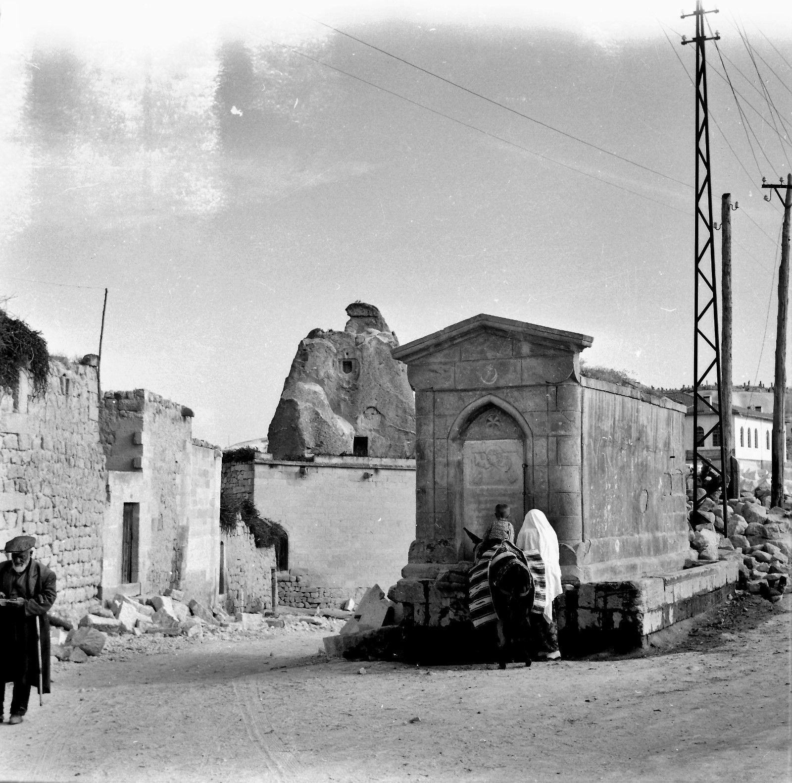
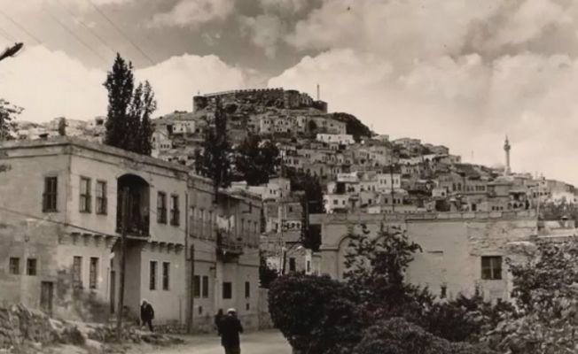
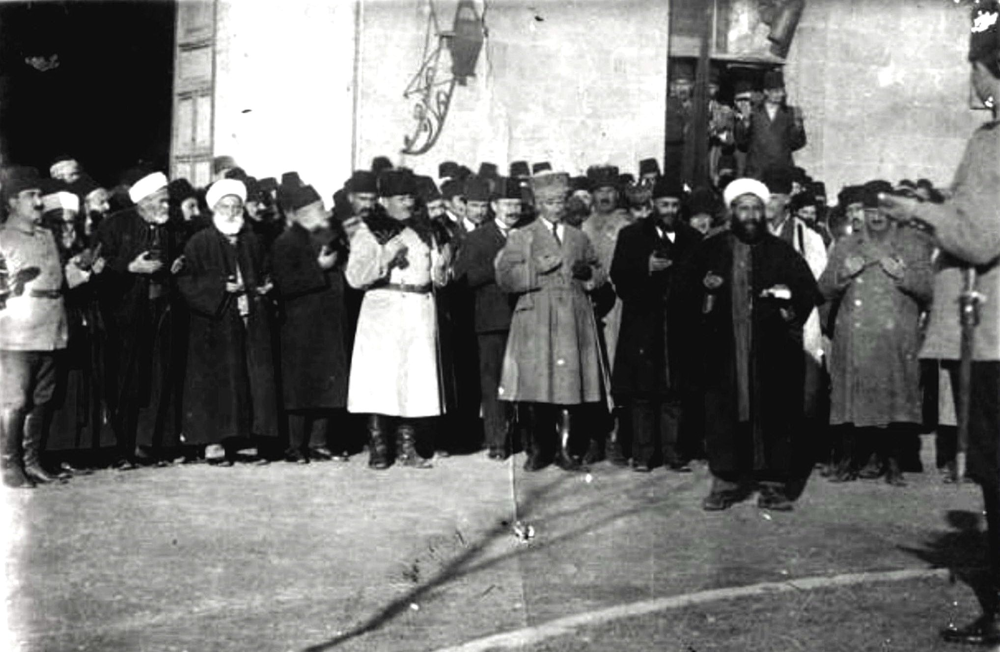
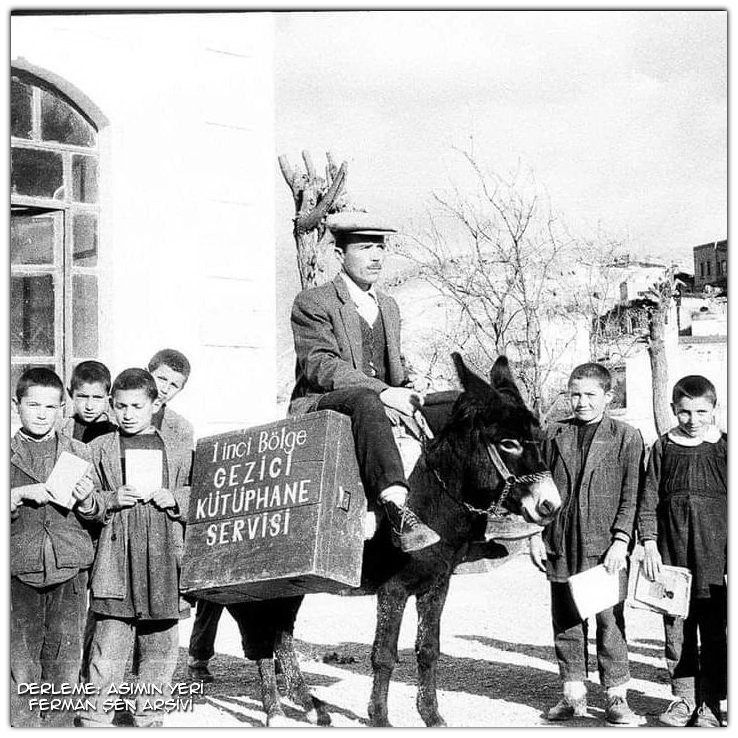

KapadokyaTur
KapadokyaTur
KapadokyaTur
KapadokyaTur
M.Ö. 5000 yılından Cumhuriyet'e; Hititler, Asurlular, Osmanlı ve Kurtuluş Savaşı dönemlerinde Kapadokya'nın kalbi.
Bölgenin ilk sakinleri Hititler olup, bu bölgeye "Nissa" ismini verdiler. Kapadokya'ya ise Asurlular "Katputuka" ismini vermişlerdir. Nevşehir ilinin en eski yerleşim yeri Gülşehir ilçesi Civelek Mağarası’nda ve Avanos Zank Höyük'te görülür.
M.Ö. 2000-1750 yılları arasında Mezopotamyalı Asurlu tacirler Anadolu'da ticari koloniler kurarak Karum-Hattuş'u oluşturmuşlardır. Anadolu'ya yazıyı getirenler de bu tacirlerdir; 'Kapadokya Tabletleri' olarak bilinen çivi yazılı metinler Anadolu'nun ticari ve hukuki temellerini aydınlatır.

1071 Malazgirt Zaferi'nden sonra Türkler bölgeye gelerek eski köye "Muşkara" ismini verdiler. Uzun yıllar Osmanlı idaresinde barış içinde yaşayan yöre halkı, zaman zaman Celâli isyanlarından etkilendi.
Muşkara'nın asıl altın çağı Lale Devri sadrazamı Nevşehirli Damat İbrahim Paşa zamanında (1718-1730) yaşanmıştır. O dönem 10-12 hanelik küçük bir köy olan Muşkara, genişletilerek imar edilmiş ve "Yeni Şehir" manasına gelen "Nevşehir" adını alarak Niğde sancağına bağlanmıştır.

Mondros Mütarekesi günlerinde Orta Anadolu doğrudan işgal görmese de, 4 Eylül 1919'da toplanan Sivas Kongresi'ne Nevşehir adına Dellalzade Hacı Osman Efendi katılmıştır.
Milli Mücadele'nin en kritik günlerinde, 22 Aralık 1919'da Mustafa Kemal Paşa Hacıbektaş'a gelerek Çelebi Cemalettin Efendi ve Salih Niyazi Baba ile görüşmüştür. Bu tarihi görüşmeyle bölge halkı Milli Mücadele saflarına tam destek vermiştir.

Cumhuriyetin ilanı sonrası Niğde'ye bağlı bir ilçe olan Nevşehir, 20 Temmuz 1954 tarihinde 6429 sayılı yasa ile il statüsüne kavuştu. Ürgüp, Avanos, Hacıbektaş ve Gülşehir gibi ilçeler Nevşehir'e bağlandı.
Bu yılların en unutulmaz simalarından biri de, yöre halkına ve çocuklara okuma sevgisini aşılamak için kitapları sandıklara doldurup köy köy gezen "Eşekli Kütüphaneci" Mustafa Güzelgöz'dür. Cumhuriyet aydınlanmasının bu eşsiz figürü, Nevşehir'in eğitim tarihine damga vurmuştur.
